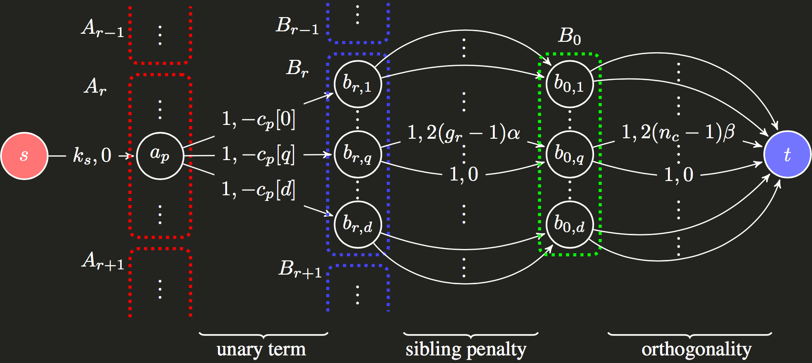
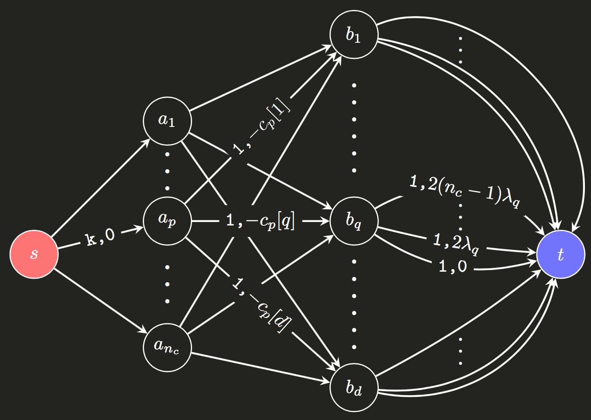
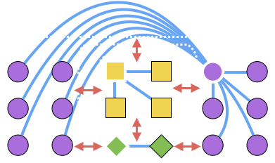
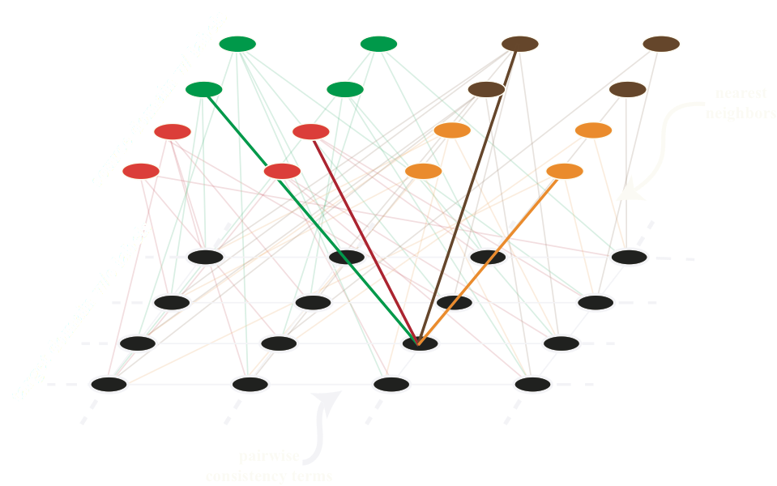
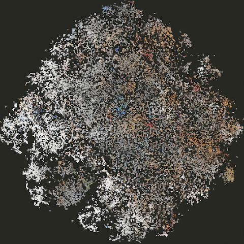
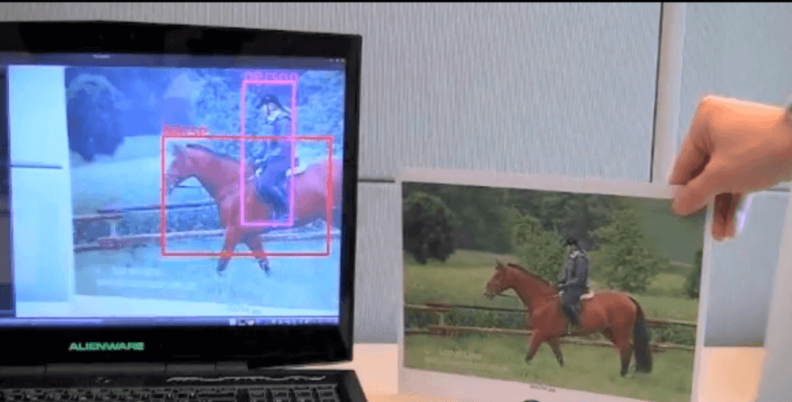
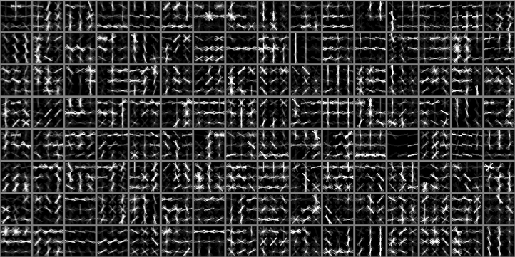
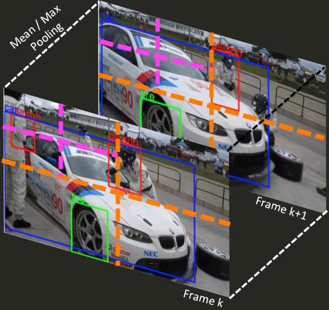

|
Hyun Oh Song
1 Gwanak-ro, Gwanak-gu, Seoul 08826, Korea
I'm an assistant professor in the Department of Computer Science and Engineering at Seoul National University. Previously, I was a full-time research scientist at Google Research, in Mountain View, where I worked on machine learning in Kevin Murphy's team. Before Google, I was a postdoctoral fellow in SAIL in the Computer Science Department at Stanford University.
I received my Ph.D. in Computer Science at UC Berkeley in late 2014, where I worked with Trevor Darrell and Stefanie Jegelka. My graduate study was fully supported by Samsung Lee Kun Hee Scholarship Foundation for five years. In summer 2013, I spent time at LEAR, INRIA as a visiting student researcher. I did my B.S. at Hanyang University.
My research interests are in machine learning, deep learning, optimization, and algorithms. Broadly, I'm interested in solving challenging problems in artificial intelligence.
Email / Google Scholar / Github / Linkedin
|
|
- Tensorflow code for the suite of deep metric learning methods I worked on at Google is officially open sourced at TensorFlow Addons.
- I'm moving to Seoul National University as an assistant professor starting Sep 2017.
- I'll join Google Research as a research scientist starting July, 2016.
- I'll serve as an Oral and Spotlight session chair at CVPR16.
 |
Learning Discrete and Continuous Factors of Data via Alternating Disentanglement
Yeonwoo Jeong, Hyun Oh Song
International Conference on Machine Learning (ICML), 2019
paper / supp / code / bibtex
|
 |
Parsimonious Black-Box Adversarial Attacks via Efficient Combinatorial Optimization
Seungyong Moon*, Gaon An*, Hyun Oh Song (*equal contribution)
International Conference on Machine Learning (ICML), 2019
Long talk
paper / supp / code / bibtex / talk video
|
 |
EMI: Exploration with Mutual Information
Hyoungseok Kim*, Jaekyeom Kim*, Yeonwoo Jeong, Sergey Levine, Hyun Oh Song (*equal contribution)
International Conference on Machine Learning (ICML), 2019
Long talk
paper / supp / code / bibtex / talk video
|
|  |
End-to-End Efficient Representation Learning via Cascading Combinatorial Optimization
Yeonwoo Jeong, Yoonsung Kim, Hyun Oh Song
IEEE Computer Vision and Pattern Recognition (CVPR), 2019
paper / supp / code / bibtex
|
|  |
Efficient end-to-end learning for quantizable representations
Yeonwoo Jeong, Hyun Oh Song
International Conference on Machine Learning (ICML), 2018
Long talk
paper / code / bibtex / talk video
|
|  |
Deep Metric Learning via Facility Location
Hyun Oh Song, Stefanie Jegelka, Vivek Rathod, Kevin Murphy
IEEE Computer Vision and Pattern Recognition (CVPR), 2017
Spotlight presentation
paper / code / bibtex / talk video
|
|  |
Learning Transferrable Representations for Unsupervised Domain Adaptation
Ozan Sener, Hyun Oh Song, Ashutosh Saxena, Silvio Savarese
Neural Information Processing Systems (NIPS), 2016
paper / bibtex
|
|  |
Deep Metric Learning via Lifted Structured Feature Embedding
Hyun Oh Song, Yu Xiang, Stefanie Jegelka, Silvio Savarese
IEEE Computer Vision and Pattern Recognition (CVPR), 2016
Spotlight presentation
paper / code / dataset / bibtex / talk video
|
|  |
Generalized Sparselet Models for Real-Time Multiclass Object Recognition
Hyun Oh Song, Ross Girshick, Stefan Zickler, Christopher Geyer, Pedro Felzenszwalb, Trevor Darrell
IEEE Transactions on Pattern Analysis and Machine Intelligence (TPAMI), 2015
paper / code / demo video 1 / demo video 2 / bibtex
|
 |
Learning to detect visual grasp affordance
Hyun Oh Song, Mario Fritz, Daniel Goehring, Trevor Darrell
IEEE Transactions on Automation Science and Engineering (TASE), 2015
paper / demo video / bibtex
|
 |
Weakly-supervised Discovery of Visual Pattern Configurations
Hyun Oh Song, Yong Jae Lee, Stefanie Jegelka, Trevor Darrell
Neural Information Processing Systems (NIPS), 2014
paper / bibtex
|
 |
On learning to localize objects with minimal supervision
Hyun Oh Song, Ross Girshick, Stefanie Jegelka, Julien Mairal, Zaid Harchaoui, Trevor Darrell
International Conference on Machine Learning (ICML), 2014
paper / talk video / code / bibtex
|
|  |
Discriminatively Activated Sparselets
Hyun Oh Song*, Ross Girshick*, Trevor Darrell
International Conference on Machine Learning (ICML), 2013
Long talk
paper / slide / poster / supp / bibtex
|
|  |
Detection Bank: An Object Detection Based Video Representation for Multimedia Event Recognition
Tim Althoff, Hyun Oh Song, Trevor Darrell
ACM Multimedia (ACMMM), 2012
paper / poster / bibtex
|
 |
Sparselet Models for Efficient Multiclass Object Detection
Hyun Oh Song, Stefan Zickler, Tim Althoff, Ross Girshick, Mario Fritz, Christopher Geyer, Pedro Felzenszwalb, Trevor Darrell
European Conference on Computer Vision (ECCV), 2012
paper /
demo video / poster / bibtex / code
|
Erdös = 3 (via Pedro Felzenszwalb) / Dijkstra = 4 (via Sergey Levine)
I like this website
|